Bài tập — Bài 5 — Định luật Ohm cho toàn mạch
Hệ bài tập được biên soạn theo các dạng xuất hiện trong bộ tài liệu Vật lí 11 của dự án. Câu hỏi được giữ ngắn, trực tiếp; độ khó tăng dần và không cố tình thêm dữ kiện gây nhiễu.
Phần A — Trắc nghiệm 4 lựa chọn
Bài 1 — Mức 1 — Nhận biết
Mạch kín gồm nguồn \(\mathcal E=12\) V, \(r=1\,\Omega\) và điện trở ngoài \(R=5\,\Omega\). Dòng điện là
A. \(1\) A. B. \(2\) A. C. \(2,4\) A. D. \(12\) A.
Đáp án và lời giải
Chọn B. \(I=\mathcal E/(R+r)=12/6=2\) A.
Bài 2 — Mức 1 — Nhận biết
Hiệu suất của nguồn trong mạch đơn R nối tiếp r có thể viết
A. \(H=R/(R+r)\). B. \(H=r/(R+r)\). C. \(H=(R+r)/R\). D. \(H=Rr\).
Đáp án và lời giải
Chọn A vì \(H=P_{ngoài}/P_{nguồn}=UI/(\mathcal EI)=U/\mathcal E=R/(R+r)\).
Bài 3 — Mức 1 — Nhận biết
Dòng ngắn mạch của nguồn là
A. \(I_{sc}=\mathcal E/R\). B. \(I_{sc}=\mathcal E/r\). C. \(I_{sc}=r/\mathcal E\). D. 0.
Đáp án và lời giải
Chọn B trong mô hình nguồn có điện trở trong r.
Bài 4 — Mức 1 — Nhận biết
Trong mạch đơn, công suất mạch ngoài đạt cực đại khi
A. \(R=0\). B. \(R=r\). C. \(R=2r\). D. \(R\to\infty\).
Đáp án và lời giải
Chọn B theo định lí truyền công suất cực đại.
Phần B — Đúng/Sai
Bài 5 — Mức 2 — Thông hiểu
Định luật Ohm toàn mạch:
a) \(I=\mathcal E/(R+r)\). b) \(U_R=IR=\mathcal E-Ir\). c) Tăng R luôn làm I tăng. d) Khi R rất lớn, I tiến về 0 và U hai cực tiến gần \(\mathcal E\).
Đáp án và lời giải
a) Đúng. b) Đúng. c) Sai. d) Đúng.
Bài 6 — Mức 2 — Thông hiểu
Công suất mạch ngoài \(P_R=\mathcal E^2R/(R+r)^2\):
a) Bằng 0 khi R=0. b) Tiến về 0 khi R rất lớn. c) Có cực đại tại R=r. d) Tại cực đại, hiệu suất nguồn là 100%.
Đáp án và lời giải
a) Đúng. b) Đúng. c) Đúng. d) Sai: khi R=r thì \(H=R/(R+r)=1/2=50\%\).
Phần C — Trả lời ngắn
Bài 7 — Mức 3 — Vận dụng
Nguồn \(9\) V, \(r=1\,\Omega\) nối với \(R=8\,\Omega\). Tính I, U ngoài và hiệu suất.
Đáp án và lời giải
\(I=9/(8+1)=1\) A. \(U=IR=8\) V. \(H=U/\mathcal E=8/9\approx88,9\%\).
Bài 8 — Mức 3 — Vận dụng
Nguồn có \(\mathcal E=6\) V, r chưa biết. Mắc R=\(5\,\Omega\) thì I=\(1\) A. Tính r.
Đáp án và lời giải
\(R+r=\mathcal E/I=6\,\Omega\), nên \(r=1\,\Omega\).
Bài 9 — Mức 3 — Vận dụng
Nguồn \(12\) V, \(r=3\,\Omega\). Tìm R để công suất mạch ngoài cực đại và giá trị cực đại.
Đáp án và lời giải
Cực đại khi \(R=r=3\,\Omega\). \(P_{max}=\mathcal E^2/(4r)=144/12=12\) W.
Phần D — Vận dụng và vận dụng cao
Bài 10 — Mức 4 — Vận dụng cao
Nguồn có \(\mathcal E=10\) V, \(r=1\,\Omega\). Mạch ngoài là biến trở R. Tìm hai giá trị R để công suất trên R bằng \(16\) W.
Đáp án và lời giải
Ta có
\(P_R=\frac{\mathcal E^2R}{(R+r)^2}=\frac{100R}{(R+1)^2}=16\).
Suy ra \(100R=16(R^2+2R+1)\),
\(16R^2-68R+16=0\), chia 4: \(4R^2-17R+4=0\).
\(R=[17\pm\sqrt{289-64}]/8=[17\pm15]/8\).
Vậy \(R=4\,\Omega\) hoặc \(R=0,25\,\Omega\). Hai giá trị có tích \(R_1R_2=r^2=1\), phù hợp tính chất đối xứng của bài cực trị công suất.
Ngân hàng bài tập mở rộng
Các bài dưới đây được đánh số nối tiếp phần bài tập phía trên. Đề bài được trình bày bằng Markdown; chỉ đồ thị, hình vẽ hoặc sơ đồ thực sự cần thiết mới được giữ dưới dạng hình. Đáp án và lời giải được đặt trong nút mở rộng ngay dưới từng bài.
Nhận biết — Trả lời ngắn
Bài 11
Một mạch điện gồm một pin 11 V, điện trở mạch ngoài 3 Ω, cường độ dòng điện trong toàn mạch là 2
A. Xác định giá trị điện trở trong của nguồn.
Đáp án và lời giải
Đáp án: \(2{,}5\)
Hướng dẫn giải: Suất điện động của nguồn: 𝜉= 𝐼(𝑅+ 𝑟). Điện trở trong của nguồn trong trường hợp này là r = ξ I −R = 11 2 −3 = 2,5 Ω.
Bài 12
Cho mạch điện như hình bên. Trong đó ξ = 26 V; r = 4 Ω; R1 = 5 Ω; R2 = 6 Ω . Tính cường độ dòng điện chạy trong mạch.
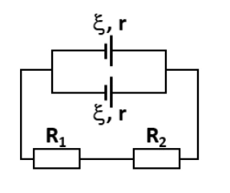
Đáp án và lời giải
Đáp án: 2
Hướng dẫn giải: - Do 2 nguồn được ghép song song nên ta thu được:
- Suất điện động của bộ nguồn: 𝜉𝑏= 𝜉= 26 𝑉; 𝑟 2 = 2 𝛺 ;
- Do R1 nt R2 nên điện trở tương đương của mạch ngoài: 𝑅𝑡đ = 𝑅1 + 𝑅2 = 5 + 6 = 11 𝛺;
- Cường độ dòng điện chạy trong mạch: 𝐼= 𝜉𝑏 𝑅𝑡đ + 𝑟𝑏 = 26 11 + 2 = 2 𝐴.
Bài 13
Cho mạch điện như hình vẽ. Trong đó ξ = 12 V, r = 0,5 Ω, R1 = R2 = 2 Ω, R3 = R5 = 4 Ω, R4 = 6 Ω. Điện trở của ampe kế và của các dây nối không đáng kể. Số chỉ của ampe kế có giá trị bằng bao nhiêu?
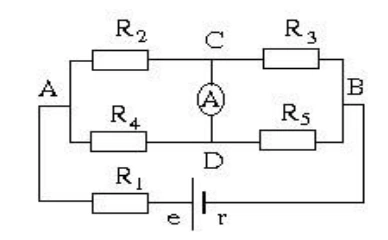
Đáp án và lời giải
Đáp án: \(0{,}5\)
Hướng dẫn giải: Ta nối tắt Ampere kế và vẽ lại sơ đồ mạch điện:
Do R1 nt (R2// R4) nt (R3 // R5) nên điện trở tương đương của đoạn mạch: 𝑅𝑡đ = 𝑅1 + 𝑅24 + 𝑅35 = 2 + 2 × 6 2 + 6 + 4 × 4 4 + 4 = 5,5 𝛺 ; Cường độ dòng điện chạy qua mạch: 𝐼= 𝜉 𝑅𝑡đ + 𝑟= 12 5,5 + 0,5 = 2 𝐴= 𝐼1 = 𝐼24 = 𝐼35; Hiệu điện thế giữa hai đầu 𝑅24và 𝑅35: 𝑈24 = 𝐼24𝑅24 = 2 × 2 × 6 2 + 6 = 3 𝑉 = 𝑈2 = 𝑈4; 𝑈35 = 𝐼35𝑅35 = 2 × 4 × 4 4 + 4 = 4 𝑉 = 𝑈3 = 𝑈5; Áp dụng định luật Ohm, ta thu được cường độ dòng điện chạy qua R2 và R3: 𝐼2 = 𝑈2 𝑅2 = 3 2 = 1,5 𝐴; 𝐼3 = 𝑈3 𝑅3 = 4 4 = 1,0 𝐴;
Xét tại điểm C, ta thu được: 𝐼2 = 𝐼3 + 𝐼𝐴 ⟹𝐼𝐴= 𝐼2 −𝐼3 = 1,5 −1,0 = 0,5 𝐴.
Vậy số chỉ Ampere kế là 0,5 A.
Bài 14
Cho mạch điện như hình, bỏ qua điện trở của dây nối, biết ξ 1 = 4 V; r1 = 0,5 Ω; ξ 2 = 6 V; r2 = 0,5 Ω; cường độ dòng điện qua mỗi nguồn bằng 2
A. Điện trở mạch ngoài có giá trị bằng
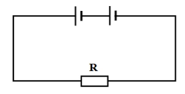
Đáp án và lời giải
Đáp án: \(2{,}5\)
Hướng dẫn giải: Do ξ 1 và ξ 2 mắc nối tiếp nên ta thu được: {𝜉𝑏= 𝜉1 + 𝜉2 = 3 + 6 = 9 𝑉 𝑟𝑏= 𝑟1 + 𝑟2 = 1 + 1 = 2 𝛺; Ta có: 𝐼= 𝜉𝑏 𝑅+ 𝑟𝑏 ⟹𝑅= 𝜉𝑏 𝐼−𝑟𝑏= 9 2 −2 = 2,5 𝛺.
Bài 15
Cho mạch điện như hình vẽ, bỏ qua điện trở của dây nối. Biết ξ = 4 V; r = 2 Ω. Biết R1 = 1 Ω; R2 = R3 = 2 Ω; R4 = 4 Ω. Tìm số chỉ Ampere kế.
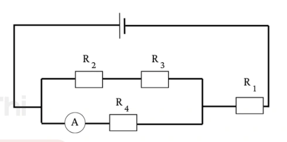
Đáp án và lời giải
Đáp án: \(0{,}4\)
Hướng dẫn giải: Điện trở tương đương của đoạn mạch: 𝑅𝑡đ = 𝑅1 + 𝑅23𝑅4 𝑅23 + 𝑅4 = 1 + (2 + 2) × 4 (2 + 2) + 4 = 3 𝛺; Cường độ dòng điện chạy trong mạch: 𝐼= 𝜉 𝑅𝑡đ + 𝑟= 4 3 + 2 = 0,8 𝐴= 𝐼1 = 𝐼234; Hiệu điện thế đặt vào hai đầu điện trở 𝑅234: 𝑈234 = 𝐼234𝑅234 = 0,8 × (2 + 2) × 4 (2 + 2) + 4 = 1,6 𝑉= 𝑈4; Cường độ dòng điện chạy qua R4 chính bằng số chỉ Ampere kế: 𝐼4 = 𝑈4 𝑅4 = 1,6 4 = 0,4 𝐴.
Nhận biết — Trắc nghiệm 4 lựa chọn
Bài 16
Công của nguồn điện là công của
A. lực lạ trong nguồn.
B. lực điện trường dịch chuyển điện tích ở mạch ngoài.
C. lực cơ học mà dòng điện đó có thể sinh ra.
D. lực dịch chuyển nguồn điện từ vị trí này đến vị trí khác.
Đáp án và lời giải
Đáp án: A Hướng dẫn giải:
Rút gọn mạch ngoài trước, rồi dùng \(I=\mathcal E/(R+r)\) và \(U=IR=\mathcal E-Ir\).
Đối chiếu kết quả với các lựa chọn, phương án phù hợp là A. lực lạ trong nguồn.
Bài 17
Cho mạch điện như hình vẽ, bỏ qua các điện trở dây nối và ampe kế, ξ = 3V, r = 1Ω, Ampere kế chỉ 0,5A. Giá trị của điện trở R là
A. 1 Ω.
B. 2 Ω.
C. 5 Ω.
D. 3 Ω.
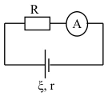
Đáp án và lời giải
Đáp án: C Hướng dẫn giải: Số chỉ Ampere kế trong trường hợp này chính bằng cường độ dòng điện chạy qua nguồn. Suất điện động của nguồn: 𝜉= 𝐼. (𝑅+ 𝑟). Từ đây ta thu được giá trị của điện trở R là R = ξ I −r = 3 0,5 −1 = 5 Ω.
Bài 18
Một nguồn điện gồm 6 Ắc – quy giống nhau mắc như hình vẽ. Mỗi acquy có suất điện động ξ = 2V, r = 1Ω. Suất điện động và điện trở trong của bộ nguồn này là
A. 6 V; 1,5 Ω.
B. 6 V; 3 Ω.
C. 12 V; 3 Ω.
D. 12 V; 6 Ω.
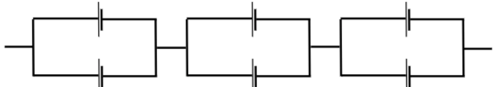
Đáp án và lời giải
Đáp án: A Hướng dẫn giải: Xét một bộ nguồn gồm 2 Ắc – quy mắc song song: + Suất điện động của bộ nguồn: 𝜉2 = 𝜉= 2 𝑉; 𝑟 2 = 1 2 𝛺; Xét bộ nguồn gồm 6 Ắc – quy: + Suất điện động của bộ nguồn: 𝜉𝑏= 3𝜉2 = 6 𝑉; + Điện trở trong của bộ nguồn: 𝑟𝑏= 3𝑟2 = 1,5 𝛺.
Bài 19
Cho mạch điện như hình vẽ. R1 = R2 = RV = 9 Ω, ξ = 28 V, r = 0,5 Ω. Bỏ qua điện trở dây nối, số chỉ vôn kế là
A. 15 V.
B. 2 V.
C. 9 V.
D. 18 V.
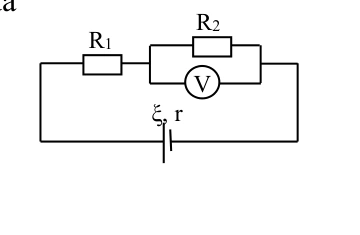
Đáp án và lời giải
Đáp án: C Hướng dẫn giải: Điện trở tương đương của mạch: 𝑅𝑡đ = 𝑅1 + 𝑅2𝑅𝑉 𝑅2 + 𝑅𝑉 = 9 + 9 × 9 9 + 9 = 13,5 𝛺; Cường độ dòng điện chạy trong mạch: 𝐼= 𝜉 𝑅𝑡đ + 𝑟= 28 13,5 + 0,5 = 2 𝐴= 𝐼1 = 𝐼2𝑉; Hiệu điện thế đặt vào hai đầu điện trở R2V chính bằng số chỉ Volt kế: 𝑈2𝑉= 𝐼2𝑉𝑅2𝑉= 2 × 9 × 9 9 + 9 = 9 𝑉.
Bài 20
Cho mạch điện như hình bên. Biết ξ = 10 V; r = 1 Ω; R1 = 5 Ω; R2 = R3 = 10 Ω. Bỏ qua điện trở của dây nối. Hiệu điện thế giữa hai đầu R1 là
A. 10 V.
B. 4 V.
C. 6 V.
D. 8 V.
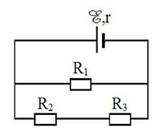
Đáp án và lời giải
Đáp án: D Hướng dẫn giải: Điện trở tương đương của đoạn mạch: 𝑅𝑡đ = 𝑅1𝑅23 𝑅1 + 𝑅23 = 5 × (10 + 10) 5 + (10 + 10) = 4 𝛺; Cường độ dòng điện chạy trong mạch: 𝐼= 𝜉 𝑅𝑡đ + 𝑟= 10 4 + 1 = 2 𝐴 Hiệu điện thế đặt vào hai cực của nguồn điện chính bằng hiệu điện thế đặt vào hai cực của R1: 𝑈= 𝑈1 = 𝜉−𝐼𝑟= 8 𝑉.
Nhận biết — Đúng/Sai
Bài 21
Cho mạch điện như hình vẽ, bỏ qua điện trở của dây nối và Ampre kế, ξ = 6V, r = 1Ω, R1 = 3Ω, R2 = 6Ω, R3 = 2Ω.
a) Điện trở tương đương của mạch ngoài là 4 Ω. b) Số chỉ Ampere kế trong trường hợp này là 1,5
A. c) Hiệu điện thế của R3 là 3 V. d) Cường độ dòng điện chạy qua R2 là 0,4 A.
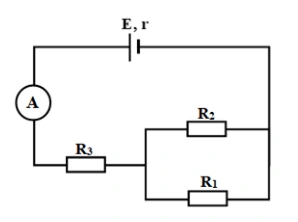
Đáp án và lời giải
Đáp án: a) Đúng; b) Sai; c) Sai; d) Đúng.
Hướng dẫn giải:
Từ sơ đồ, \((R_1\parallel R_2)\) nối tiếp \(R_3\).
a) Đúng. \(R_{12}=3\parallel6=2\ \Omega\), nên \(R_{\text{ngoài}}=R_{12}+R_3=2+2=4\ \Omega\).
b) Sai. Dòng mạch chính, cũng là số chỉ ampe kế, \(I=\xi/(R_{\text{ngoài}}+r)=6/(4+1)=1{,}2\) A, không phải \(1{,}5\) A.
c) Sai. \(U_3=IR_3=1{,}2\cdot2=2{,}4\) V, không phải \(3\) V.
d) Đúng. Điện áp trên nhóm song song \(U_{12}=IR_{12}=1{,}2\cdot2=2{,}4\) V; do đó \(I_2=U_{12}/R_2=2{,}4/6=0{,}4\) A.
Bài 22
Cho mạch điện như hình vẽ. Trong đó ξ = 48 V, r = 2 Ω, R1= 2 Ω, R2 = 8 Ω, R3 = 6 Ω, R4 = 16 Ω. Điện trở của các dây nối không đáng kể.
a) Điện trở tương đương trong trường hợp này là 8 Ω. b) Cường độ dòng điện chạy trong mạch là 6
A. c) Hiệu điện thế giữa hai điểm M và N là 3 V. d) Nếu chập hai điểm M và N thì sơ đồ mạch điện vẫn không đổi.
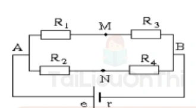
Đáp án và lời giải
Đáp án: a) Sai; b) Đúng; c) Đúng; d) Sai.
Hướng dẫn giải:
Khi chưa chập \(M,N\), hai nhánh \((R_1+R_3)\) và \((R_2+R_4)\) mắc song song.
a) Sai. \(R_{13}=2+6=8\ \Omega\), \(R_{24}=8+16=24\ \Omega\), nên \(R_{\text{ngoài}}=8\parallel24=6\ \Omega\), không phải \(8\ \Omega\).
b) Đúng. \(I=\xi/(R_{\text{ngoài}}+r)=48/(6+2)=6\) A.
c) Đúng. \(U_{AB}=IR_{\text{ngoài}}=36\) V. Dòng hai nhánh là \(I_{13}=36/8=4{,}5\) A và \(I_{24}=36/24=1{,}5\) A. Do đó \(U_{AM}=I_{13}R_1=9\) V, \(U_{AN}=I_{24}R_2=12\) V, nên \(U_{MN}=U_{MA}+U_{AN}=-9+12=3\) V.
d) Sai. Chập \(M\) và \(N\) làm hai điểm này cùng điện thế và thay đổi cách ghép các điện trở; sơ đồ tương đương không còn như ban đầu.
Bài 23
Cho mạch điện như hình. Bỏ qua điện trở của dây nối và Ampere kế, ξ = 12 V, r = 0,5 Ω, R1 = 13 Ω, R2 = 35 Ω, R3 = 15 Ω.
a) Sơ đồ mạch chính là R1 nt (R2//R3). b) Cường độ dòng điện chạy qua mạch là 0,5
A. c) Hiệu điện thế chạy qua R1 là 5,25 V. d) Số chỉ Ampere kế là 0,74 A
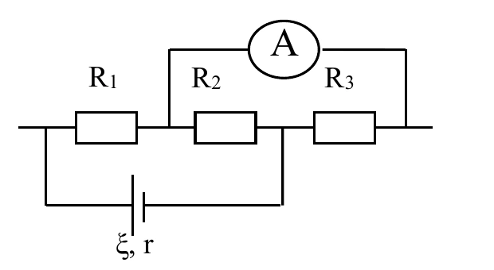
Đáp án và lời giải
Đáp án: a) Đúng; b) Đúng; c) Sai; d) Sai.
Hướng dẫn giải:
a) Đúng. Ampe kế lí tưởng được coi như dây nối, nên mạch ngoài tương đương \(R_1\) nối tiếp \((R_2\parallel R_3)\).
b) Đúng. \(R_{23}=35\parallel15=10{,}5\ \Omega\), nên \(R_{\text{ngoài}}=13+10{,}5=23{,}5\ \Omega\). Dòng mạch chính \(I=12/(23{,}5+0{,}5)=0{,}5\) A.
c) Sai. \(U_1=IR_1=0{,}5\cdot13=6{,}5\) V. Giá trị \(5{,}25\) V là điện áp trên nhóm \(R_2\parallel R_3\).
d) Sai. \(I_3=U_{23}/R_3=5{,}25/15=0{,}35\) A, nên số chỉ ampe kế là \(0{,}35\) A, không phải \(0{,}74\) A.
Thông hiểu — Trắc nghiệm 4 lựa chọn
Bài 24
Khi dòng điện chạy qua đoạn mạch ngoài nối giữa hai cực của nguồn điện thì các hạt mang điện chuyển động có hướng dưới tác dụng của lực
A. cu lông.
B. hấp dẫn.
C. lực lạ.
D. điện trường.
Đáp án và lời giải
Đáp án: D Hướng dẫn giải:
Rút gọn mạch ngoài trước, rồi dùng \(I=\mathcal E/(R+r)\) và \(U=IR=\mathcal E-Ir\).
Đối chiếu kết quả với các lựa chọn, phương án phù hợp là D. điện trường.
Bài 25
Với mạch kín gồm nguồn có suất điện động ξ, điện trở trong r nối mạch ngoài có điện trở R, thì hiệu điện thế giữa 2 cực nguồn điện không thể tính bằng
A. U = I. R.
B. U = ξ R (R+r).
C. U = ξ −Ir.
D. U = ξ R (R−r).
Đáp án và lời giải
Đáp án: D Hướng dẫn giải:
Rút gọn mạch ngoài trước, rồi dùng \(I=\mathcal E/(R+r)\) và \(U=IR=\mathcal E-Ir\).
Đối chiếu kết quả với các lựa chọn, phương án phù hợp là D. U = ξ R (R−r).
Vận dụng — Trắc nghiệm 4 lựa chọn
Bài 26
Một nguồn điện có điện trở trong 1 Ω được mắc với điện trở R = 6 Ω thành mạch kín. Khi đó hiệu điện thế giữa hai cực của nguồn điện là 12 V. Suất điện động của nguồn điện là
A. ξ = 12V.
B. ξ = 13V.
C. ξ = 14V.
D. ξ = 15V.
Đáp án và lời giải
Đáp án: C Hướng dẫn giải: 𝑈 𝑅. Ta thu được cường độ dòng điện chạy qua nguồn là 𝐼= 𝑈 𝑅= 12 6 = 2 𝐴 ; A R ξ, r
Suất điện động của nguồn điện: 𝜉= 𝐼. (𝑅+ 𝑟) = 2 × (6 + 1) = 14 𝑉.
Bài 27
Một mạch có các nguồn giống nhau (ξ = 3V; r = 0,3 Ω) được mắc như hình. Suất điện động và điện trở trong của bộ nguồn là
A. ξ𝑏= 3 V; ξ𝑏= 0,4 Ω.
B. ξ𝑏= 12 V; ξ𝑏= 0,1 Ω.
C. ξ𝑏= 12 V; ξ𝑏= 0,4 Ω.
D. ξ𝑏= 3 V; ξ𝑏= 0,1 Ω.
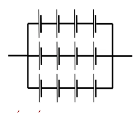
Đáp án và lời giải
Đáp án: C Hướng dẫn giải: Với n nguồn điện giống nhau được ghép thành n = 3 dãy, mỗi dãy có m = 4 nguồn điện mắc nối tiếp nên: Suất điện động của bộ nguồn: 𝜉𝑏= 𝑚𝜉= 4 × 3 = 12 𝑉 ; Điện trở trong của bộ nguồn: 𝑟𝑏= 𝑚𝑟 𝑛= 4 × 0,3 3 = 0,4 𝛺.
Bài 28
Cho mạch điện như hình vẽ. R1 = R2 = RV = 10 Ω, ξ = 2 V, r = 1 Ω. Bỏ qua điện trở dây nối, số chỉ Volt kế là
A. 0,55 V.
B. 1,00 V.
C. 0, 80 V.
D. 0,63 V.
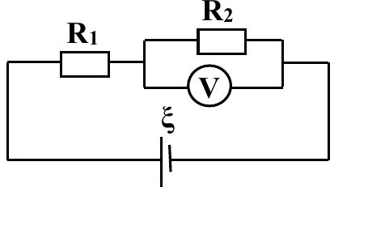
Đáp án và lời giải
Đáp án: D Hướng dẫn giải: 𝑅2𝑅𝑉 𝑅2+𝑅𝑉= 10 + 10×10 10+10 = 15 𝛺 ; 𝜉 𝑅𝑡đ+𝑟= 2 15+1 = 0,125 𝐴; Do R1 nt (R2 // RV) nên I1 = I2V = I = 0,125 A. Hiệu điện thế giữa hai đầu U2V: 𝑈2𝑉= 𝐼2𝑉× 𝑅2𝑉= 0,125 × 10 × 10 10 + 10 = 0,625 𝑉 ; Do R2 và Volt kế mắc song song, nên U2V = U2 = UV = 0,625 V. Như vậy số chỉ của Volt kế là 0,625 V.
Bài 29
Cho sơ đồ mạch điện như hình bên. Trong đó ξ = 1,2 V, r = 0,5 Ω, R1 = R3 = 2Ω, R2 = R4 = 4 Ω. Hiệu điện thế giữa hai điểm A, B là
A. 1,0 V.
B. 0,2 V.
C. 0,8 V.
D. 0, 6 V.
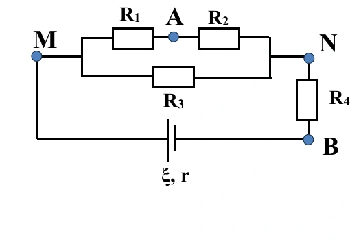
Đáp án và lời giải
Đáp án: A. \(1{,}0\) V.
Hướng dẫn giải:
Bước 1 — Rút gọn mạch ngoài. Từ sơ đồ:
\((R_1\text{ nối tiếp }R_2)\parallel R_3 \quad\text{rồi nối tiếp }R_4.\)
Ta có
\(R_{12}=R_1+R_2=2+4=6\ \Omega,\)
\(R_{123}=\frac{R_{12}R_3}{R_{12}+R_3} =\frac{6\cdot2}{6+2}=1{,}5\ \Omega,\)
nên
\(R_{\text{ngoài}}=R_{123}+R_4=1{,}5+4=5{,}5\ \Omega.\)
Bước 2 — Tính dòng mạch chính.
\(I=\frac{\xi}{R_{\text{ngoài}}+r} =\frac{1{,}2}{5{,}5+0{,}5} =0{,}20\ \text{A}.\)
Vì \(R_{123}\) nối tiếp \(R_4\), nên
\(I_{123}=I_4=I=0{,}20\ \text{A}.\)
Do đó
\(U_{NB}=U_4=I_4R_4=0{,}20\cdot4=0{,}80\ \text{V},\)
\(U_{123}=I_{123}R_{123}=0{,}20\cdot1{,}5=0{,}30\ \text{V}.\)
Bước 3 — Tìm \(U_{AN}\). Vì \(R_{12}\parallel R_3\) nên \(U_{12}=U_3=U_{123}=0{,}30\) V. Suy ra
\(I_{12}=\frac{U_{12}}{R_{12}}=\frac{0{,}30}{6}=0{,}05\ \text{A}.\)
\(R_1\) nối tiếp \(R_2\) nên \(I_2=I_{12}=0{,}05\) A, do đó
\(U_{AN}=U_2=I_2R_2=0{,}05\cdot4=0{,}20\ \text{V}.\)
Cuối cùng
\(U_{AB}=U_{AN}+U_{NB}=0{,}20+0{,}80=1{,}00\ \text{V}.\)
Vậy chọn A.
Đối chiếu nguồn
Lời giải PDF có hai lỗi gõ ở bước giữa: ghi \(R_{123}\parallel R_4\) dù sơ đồ và phép tính cho thấy chúng nối tiếp, đồng thời xuất hiện \(I=0{,}15\) A rồi các bước sau lại dùng đúng \(0{,}20\) A. Phần giải trên giữ nguyên phương pháp nguồn nhưng chuẩn hóa lại hai chỗ này để mạch lập luận nhất quán.
Bài 30
Cho mạch điện như hình. Bỏ qua điện trở của dây nối và Ampere kế, ξ = 15 V, r = 1 Ω, R1 = 12 Ω, R2 = 36 Ω, R3 = 15 Ω. Số chỉ Ampere kế là
A. 0,45
A. B. 0,65
A. C. 0,75
A. D. 1,00 A.
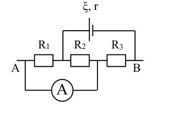
Đáp án và lời giải
Đáp án: A Hướng dẫn giải: Ta vẽ lại sơ đồ mạch điện: Do (R1//R2) nt R3, điện trở tương đương của mạch ngoài: 𝑅𝑡đ = 𝑅1𝑅2 𝑅1 + 𝑅2 + 𝑅3 = 12 × 36 12 + 36 + 15 = 24 𝛺; Cường độ dòng điện chạy trong mạch chính: 𝐼= 𝜉 𝑅𝑡đ + 𝑟= 15 24 + 1 = 0,6 𝐴; Mà I = I12 = I3 = 0,6 A, Hiệu điện thế của R12: 𝑈12 = 𝐼12𝑅12 = 0,6 × 12 × 36 12 + 36 = 5,4 𝑉; Mà U12 = U1 = U2 = 5,4 V. Cường độ dòng điện chạy qua R1 chính bằng số chỉ Ampere kế: 𝐼1 = 𝑈1 𝑅1 = 5,4 12 = 0,45 𝐴; Vậy số chỉ Ampere kế là 0,45 A.